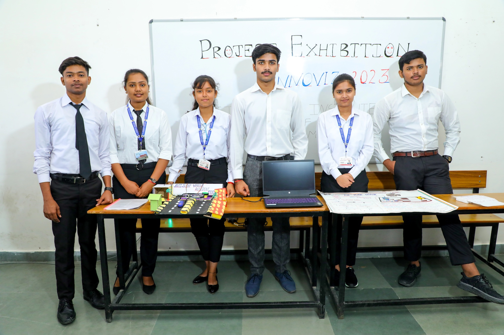
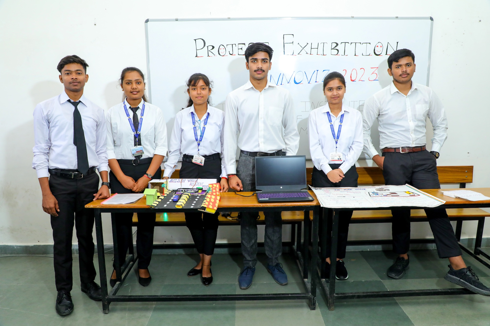

Welcome to ARD College
A community of learners committed to academic excellence, practical skills, and personal growth. Join us to build knowledge, character, and a brighter future.
Brief details of our college
Our college is a distinguished institution of higher learning dedicated to excellence in education, research, and community service. Since its establishment, the college has been committed to nurturing young minds and empowering students to achieve their fullest potential. With a focus on academic rigor and holistic development, we provide a learning environment that blends tradition with innovation.
The campus offers state-of-the-art infrastructure, modern laboratories, digital classrooms, and a well-stocked library that support academic pursuits across disciplines. Our dedicated faculty members bring a wealth of knowledge and experience, serving as mentors who guide students through both academic and personal growth.
 

Beyond academics, the college encourages participation in cultural programs, sports, clubs, and leadership activities that enhance creativity, confidence, and teamwork. We believe education is not confined to classrooms, and our vibrant campus life ensures that students develop essential life skills alongside academic knowledge.
Over the years, our alumni have excelled in diverse fields, making significant contributions worldwide. Their success reflects the values of discipline, integrity, and innovation that are at the heart of our institution. With a vision to be a leader in education and a mission to cultivate knowledge, character, and service, our college continues to inspire students to dream big, work hard, and make a positive impact in the world.
A Legacy spanning more than a decade
ARD degree college is a leading education organization in the North Karnataka region. It has a legacy of more than 100 years and 75 education institutions under its banner, which comprise professional institutes, colleges of humanities and social sciences, public schools and research institutes
Our Mission
At ARD College, we aim to provide quality education that prepares students for successful careers and meaningful contributions to society.
History
Founded in 1990, ARD College has grown from a small institution into a leading center of higher education, recognized for academic excellence and innovation.